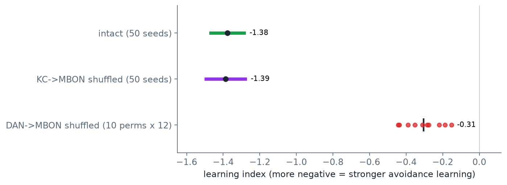

PART 4
重現成功只代表「照作者的做法會得到作者的數字」。這一頁改動做法本身：加大樣本、打亂另一層接線、換一批神經元、拿標記去對文獻
每一項都只改參數、對照組或讀法，不改作者的模型；程式在下載包的 blackjack/scripts/bj_extra.py，結果另存，不覆蓋重現的輸出。代號 X1–X4 是本課自己編的。每一節照同一個順序寫：作者原本怎麼說、我們懷疑哪裡不夠、怎麼檢、怎樣算過、結果、結論能說到哪裡為止。四項都針對制約學習（PART 3 第 5 節的 BJ3）：它是 21 點的地基：21 點用同一條學習規則，但每一手的輸贏夾著抽牌的運氣，直接在 21 點上打亂接線看不清楚，所以在較單純的制約實驗上檢；地基穩了，21 點那一步的「有多巴胺才會變好」才有解釋。
| 代號 | 問的問題 | 結果 | 對作者的結論有什麼影響 |
|---|---|---|---|
| X1 | 12 個種子的學習指數是不是挑出來的 | 50 個種子：−1.38；作者的 −1.30 在其信賴區間內 | 支持 |
| X2 | 打亂「多巴胺神經元連到哪顆 MBON」會怎樣 | 學習指數 −1.30 → −0.31（同用 12 個種子比） | 支持作者的解讀：學習靠這一層 |
| X3 | 換一批 KC，結果會不會變 | 換六種選法，連作者的共七種都在 −1.21 到 −1.43 | 支持 |
| X4 | MBON 的趨近／迴避標記與文獻規則一致嗎 | 97 顆中 62 顆一致 | 不影響學習結果；但標記不能拿來談生物學 |
每一列的數字出處見下面對應的小節。
作者的說法：完整模型 12 個種子的學習指數平均 −1.30（學習指數的定義見 PART 1 第 5 節：負得愈多，代表愈討厭被懲罰的氣味）。懷疑：12 個種子不多，而且種子是作者選的；如果剛好挑到學得好的 12 個，數字會比真實情況漂亮。檢法：改用 50 個種子（0–49，前 12 個就是作者的 12 個），完整版與 KC→MBON 打亂各跑一次。怎樣算過：如果作者挑過種子，他的 −1.30 會比 50 個的平均明顯更負，甚至掉出 50 個種子的 95% 信賴區間；所以標準是 −1.30 要落在區間內。信賴區間用 50 個種子的平均與標準差算出（平均 ± 1.96 × 標準差 ÷ √50），意思是：重複做很多次這樣的 50 個種子，平均值落在這個範圍內的把握是 95%。
| 條件 | 種子數 | 學習指數平均 | 95% 信賴區間 |
|---|---|---|---|
| 完整（作者的 12 個種子） | 12 | −1.30 | −1.49 到 −1.11 |
| 完整 | 50 | −1.38 | −1.47 到 −1.29 |
| KC→MBON 打亂 | 50 | −1.39 | −1.49 到 −1.28 |
由 blackjack/scripts/bj_extra.py 算出，輸出在 out/blackjack/bj_extra.json 的 X1_50_seeds。
結果：50 個種子的平均 −1.38 比 12 個的 −1.30 更負一點，而作者的 −1.30 落在 50 個種子的信賴區間（−1.47 到 −1.29）之內，離區間上端 −1.29 只差 0.01，很接近邊界；但方向說明了問題：挑過的種子應該比 50 個的平均更負，作者的反而比較不負。結論：看不出作者挑過種子。KC→MBON 打亂與完整版仍然分不開，和作者的表一致。
作者的說法：作者自己做過一個對照：把 KC→MBON 的接線打亂，學習幾乎不受影響（PART 3 第 5 節）。他的解讀是：KC→MBON 這一層只是氣味代碼到輸出的對應，哪顆 KC 接哪顆 MBON 不重要；真正重要的是懲罰訊號能送到哪些 MBON，也就是 DAN→MBON 這一層（PART 1 第 4 節走過的例子：懲罰多巴胺只削弱它所管那幾顆 MBON 的輸入連結）。
懷疑：這是推論，作者沒有直接打亂 DAN→MBON 來驗。檢法（X2）：把每顆多巴胺神經元連到的 MBON 隨機重排，其他全部不動，MBON 的趨近／迴避標記也不動；做 10 種重排、每種 12 個種子。怎樣算過：如果作者的解讀對，學習指數應該明顯往 0 靠。

scripts/make_figures.py 從 out/blackjack/bj_extra.json 畫出。結果：打亂 DAN→MBON 之後，學習指數從 −1.30（作者的 12 個種子，與 X2 用同一組種子）掉到 −0.31（10 種重排各 12 個種子，再取平均），少了約四分之三，但沒有降到 0：重排之後懲罰訊號仍有一部分碰巧落在趨近型 MBON 上，所以還剩一點學習。對照打亂 KC→MBON 完全沒影響。結論：支持作者的解讀，這個模型的學習靠的是多巴胺神經元與 MBON 之間的對應。
作者的選擇（X3）：蕈狀體路徑上有 3,811 顆 KC，作者只取 1,200 顆（依每顆「收到 PN 的突觸數加送到 MBON 的突觸數」排名，等距取）。懷疑：結果會不會是這 1,200 顆的特性，換一批就不同？檢法：換成五組隨機的 1,200 顆、以及全部 3,811 顆，各跑 12 個種子。怎樣算過：作者選法的 −1.30 要落在每一種選法 12 個種子的 95% 信賴區間內（六種都在內，區間記在 bj_extra.json 的 X3_kc_subsets）；「切斷多巴胺」那一欄仍要是 0（切斷多巴胺＝懲罰訊號送不進蕈狀體，模型應該學不到任何東西，不是 0 就是程式有錯）：
| KC 選法 | KC 數 | 學習指數 | 切斷多巴胺 |
|---|---|---|---|
| 作者的選法 | 1,200 | −1.30 | 0.00 |
| 全部 | 3,811 | −1.21 | 0.00 |
| 隨機一 | 1,200 | −1.32 | 0.00 |
| 隨機二 | 1,200 | −1.24 | 0.00 |
| 隨機三 | 1,200 | −1.31 | 0.00 |
| 隨機四 | 1,200 | −1.43 | 0.00 |
| 隨機五 | 1,200 | −1.34 | 0.00 |
輸出在 out/blackjack/bj_extra.json 的 X3_kc_subsets；作者選法那一列就是 PART 3 第 5 節的重現結果。用全部 KC 切出來的連結數（22,581 條 PN→KC、57,823 條 KC→MBON）也存在這裡，PART 3 第 4 節拿它對 README。
結果：七種選法都在 −1.21 到 −1.43 之間，切斷多巴胺都是 0。用全部 3,811 顆反而學得略少（−1.21），原因本課沒有追。結論：結果對 KC 怎麼挑不敏感。
作者的做法：給每顆 MBON 標「趨近」或「迴避」的依據，是它主要接收哪一群多巴胺神經元：主要來自 PPL1（懲罰）標趨近、主要來自 PAM（獎賞）標迴避（為什麼反過來，見 PART 1 第 4 節）。作者在 README 明說沒有拿這些標記去對照文獻裡已鑑定的 MBON。懷疑：標記是從多巴胺輸入數出來的，沒有對過任何實驗證據。如果標記對不上真實果蠅，PART 3 的學習結果還成立嗎？標記能不能拿來談生物學？
檢法（X4）：用一條簡化的文獻規則做粗略對照。Aso 等人 2014 年在 eLife 用光遺傳學（把光敏蛋白放進特定神經元，用光就能讓它放電）逐類活化 MBON，看果蠅趨近還是迴避，發現釋放麩胺酸的 MBON 多半促成迴避，釋放乙醯膽鹼或 GABA 的多半促成趨近（doi:10.7554/eLife.04580）。傳導物質是神經元放電時釋放給下游的化學訊號，PART 1 第 3 節決定連結正負號的也是它。這條規則有已知的例外，這裡只當粗略對照。MBON 的傳導物質用 MaleCNS 附的預測值：它是從電子顯微鏡影像用機器學習猜出來的，可能猜錯，猜錯的那顆就會被算到錯的一列，所以這張表也只能當粗略對照。與作者的標記列成交叉表：
| 預測的傳導物質 | 作者標趨近 | 作者標迴避 | 文獻規則預期 |
|---|---|---|---|
| 乙醯膽鹼 | 38 | 12 | 趨近 |
| GABA | 8 | 13 | 趨近 |
| 麩胺酸 | 10 | 16 | 迴避 |
粗體是與規則一致的格子。輸出在 out/blackjack/bj_extra.json 的 X4_mbon_valence，含逐顆的對照表。
結果：一致的是 38 ＋ 8 ＋ 16 ＝ 62 顆，占 97 顆的 64%；GABA 那一群多數相反。結論：PART 3 的學習結果不受這件事影響，原因在標記怎麼來的：它本來就是從 DAN→MBON 的接線數出來的（PART 1 第 4 節），被懲罰多巴胺管的 MBON 一定被標成趨近型，所以「懲罰削弱趨近型的輸入」在模型裡依定義成立，不需要標記對得上真實果蠅。X2 說的是同一件事：打亂 DAN→MBON 之後標記和接線不再對齊，學習才掉下來。但它表示：「哪些 MBON 驅動趨近」不能從這個模型讀出生物學結論。要逐顆確認，得把 MaleCNS 的 MBON 編號對到文獻裡已鑑定的 MBON，本課沒有做。